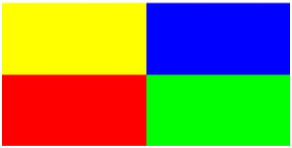

27.1.3 Loading images to the legacy format
The readrgb
command reads an Xcas image structure (see Section 27.1.1).
-
readrgb command takes
filename, the name of an image file in JPEG, PNG or GIF format.
- readrgb(filename) returns the
legacy Xcas image structure for the image in filename.
Example
Assume the the image shown in Figure 27.1
is stored in file image1234.jpg.

| Figure 27.1: An image of size 250× 500 with colors |
After reading it into a variable name with readrgb using the legacy Xcas format:
| a:=readrgb("image1234.jpg") |
the variable a will contain a list.
-
a[0] will be [4,250,500], the number of
channels, height, and width of the image.
- a[1], the red channel,
- a[2], the green channel,
- a[3], the transparency channel,
- a[4], the blue channel.